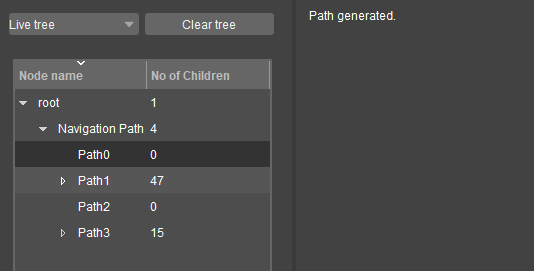
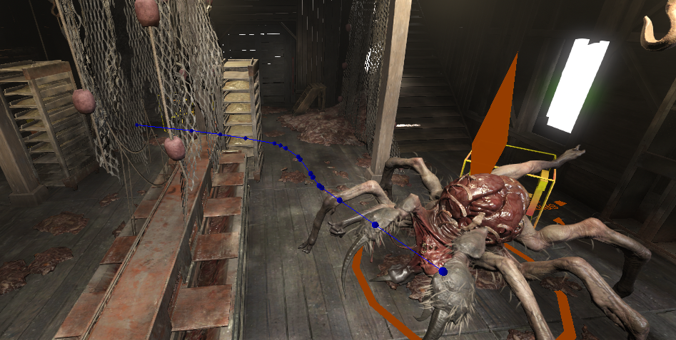
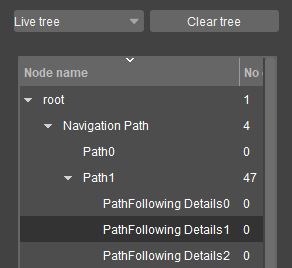
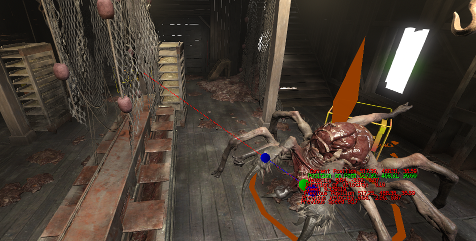

Overview
Universal Debug Recordings (UDR) refers to a standalone system (API) on CRYENGINE, created to assist programmers with visual debugging. Visualization of Render Primitives, saving and loading them via XML files is achieved through the UDR Visualizer.
To demonstrate how UDR code can be created and utilized for debugging, this section contains code that was used to debug the movements of the Spider boss in the game HUNT: Showdown. Two code routines were used to debug the Spider's path:
- One provides a high-level view of the Spider's path,
- The other provides additional information related to how the path was followed.
Path Debugging Routine (High-level)
Here, a function RecordPath() is created to record each segment of the path followed by the Spider. This function uses UDR to create nested scopes, and to render the path followed by the Spider using lines and spheres.
#include <CryUDR/InterfaceIncludes.h>
void C3DPathFollower::CPath::RecordPath()
{
// Opens a scope using a fixed string.
// The first time this function gets called, it creates the scope.
// Once is created, each time we call this function the scope will get re-entered.
UDR::CScope_FixedString scope("Navigation Path");
{
const ColorB colBlue(0, 0, 255);
const ColorB colGreen(0, 255, 0);
// Opens a scope using an automatically generated unique string using the prefix 'path'.
// Each time this function gets called, it creates a new scope using the prefix and an index (ie: 'Path0', 'Path1', 'Path2'...).
UDR::CScope_UniqueStringAutoIncrement scope("Path");
{
scope->LogInformation("Path generated.");
for (const SPathSegment& segment : m_segments)
{
// We add render primitives to this path scope.
scope->AddLine(segment.segment.start, segment.segment.end, colBlue);
scope->AddSphere(segment.segment.start, 0.05f, colBlue);
scope->AddSphere(segment.segment.end, 0.05f, colBlue);
}
}
}
}

'Path0' followed by the Spider is selected in the UDR Visualizer

Visualization of 'Path0' followed by the Spider in the Viewport. Render primitives were added through the above code.
Path Debugging Routine (Low-level)
Apart from recording the Spider's path, the following function also records additional information such as the velocity, speed, and position of the Spider. The primary difference between this and the previous code snippet, is that existing scopes are re-entered here.
void C3DPathFollower::RecordPathFollowingDetails()
{
const ColorB colBlue(0, 0, 255);
const ColorB colGreen(0, 255, 0);
const ColorB colRed(255, 0, 0);
const float fontSize = 1.2f;
// Re-enter previously created scope with a fixed name.
UDR::CScope_FixedString scope("Navigation Path");
{
// Re-enter a previously created scope whose name was uniquely generated.
// For example, if we the scopes 'Path0', 'Path1', 'Path2' in memory it will pick 'Path2' to continue from there.
UDR::CScope_UseLastAutoIncrementedUniqueString scope("Path");
{
UDR::CScope_UniqueStringAutoIncrement scope("PathFollowing Details");
// We add render primitives to the 'PathFollowing Details' scope.
scope->AddSphere(debugInfo.currentPos, 0.1f, colRed);
scope->AddSphere(debugInfo.currentPosOnPath, 0.1f, colGreen);
scope->AddLine(debugInfo.currentPos, debugInfo.currentPos + debugInfo.velocityOut, colRed);
scope->AddLine(debugInfo.segmentStart, debugInfo.segmentEnd, colBlue);
scope->AddSphere(debugInfo.segmentStart, 0.1f, colBlue);
scope->AddSphere(debugInfo.segmentEnd, 0.1f, colBlue);
scope->AddText((debugInfo.currentPos + Vec3(0, 0, 0.4f)), fontSize, colRed, "Current Position %.2f, %.2f, %.2f", debugInfo.currentPos.x, debugInfo.currentPos.y, debugInfo.currentPos.z);
scope->AddText((debugInfo.currentPos + Vec3(0, 0, 0.3f)), fontSize, colGreen, "Position on Path %.2f, %.2f, %.2f", debugInfo.currentPosOnPath.x, debugInfo.currentPosOnPath.y, debugInfo.currentPosOnPath.z);
scope->AddText((debugInfo.currentPos + Vec3(0, 0, 0.2f)), fontSize, colRed, "Velocity %.2f, %.2f, %.2f", debugInfo.velocityOut.x, debugInfo.velocityOut.y, debugInfo.velocityOut.z);
scope->AddText((debugInfo.currentPos + Vec3(0, 0, 0.1f)), fontSize, colRed, "Duration of Velocity: %.2f", debugInfo.velocityDuration);
scope->AddText((debugInfo.currentPos + Vec3(0, 0, 0)), fontSize, colRed, "Speed %f", debugInfo.speed);
scope->AddText((debugInfo.currentPos + Vec3(0, 0, -0.1f)), fontSize, colRed, "Previous Position %.2f, %.2f, %.2f", debugInfo.prevPos.x, debugInfo.prevPos.y, debugInfo.prevPos.z);
scope->AddText((debugInfo.currentPos + Vec3(0, 0, -0.2f)), fontSize, colRed, "Previous Velocity %.2f, %.2f, %.2f", debugInfo.prevVelocity.x, debugInfo.prevVelocity.y, debugInfo.prevVelocity.z);
scope->AddText((debugInfo.currentPos + Vec3(0, 0, -0.3f)), fontSize, colRed, "Previous Speed %.2f", debugInfo.prevSpeed);
}
}
}
'PathFollowing Detail1' is selected in the UDR Visualizer

Visualization of 'PathFollowing Details1' followed by the Spider. Render primitives were added through the above code.